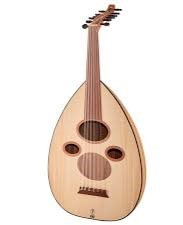
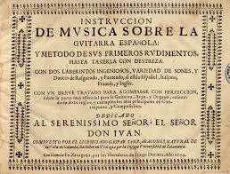
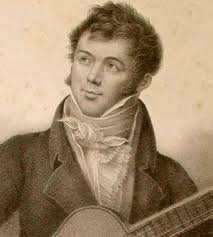
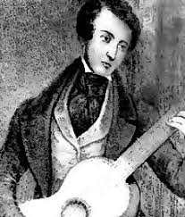
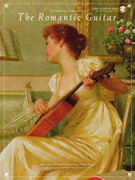
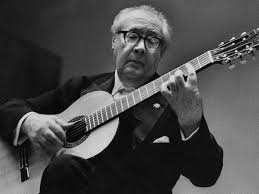
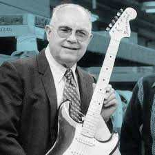

-- Ancient To Medieval Period --



-
3000 BC: Ancient stringed instruments resembling
early guitars, such as the tahrir and oud, emerge in Mesopotamia
and Egypt.
-
8th Century: The oud spreads to Europe through the
Moors, influencing the development of the lute.
-- Renaissance (15th-17th Century) --
-
15th Century: The four-course guitar (similar to the
modern guitar) is developed in Spain.
-
16th Century: Luis de Milán publishes “El Maestro,”
one of the earliest guitar method books. The five-course guitar
gains popularity.
-- Baroque Period (1600-1750) --

-
17th Century: Gaspar Sanz, a Spanish guitarist,
publishes “Instrucción de Música sobre la Guitarra Española,”
enhancing guitar techniques and repertoire.
-- Classical Period (1750-1820) --



-
19th Century: Fernando Sor and Matteo Carcassi become
prominent composers and performers, expanding the guitar
repertoire.
-
19th Century: The six-string guitar becomes
standardized.
-- Romantic Period (1820-1900) --



-
1840s: C.F. Martin establishes a guitar manufacturing
company in the U.S.A, revolutionizing guitar production
techniques.
-
1840s: Julian Arcas gains fame for his virtuosic
performances and compositions.
-- 20th Century (1930-2000) --




-
1930s: Andrés Segovia brings classical guitar to
concert stages worldwide, elevating its status.
-
1940s: Les Paul invents the solid-body electric
guitar, leading to the electric guitar's rise in popularity.
-
1950s: Fender introduces the Telecaster (1950) and
Stratocaster (1954), shaping rock music.
-
1960s: Jimi Hendrix revolutionizes electric guitar
playing, pushing the boundaries of sound and technique.